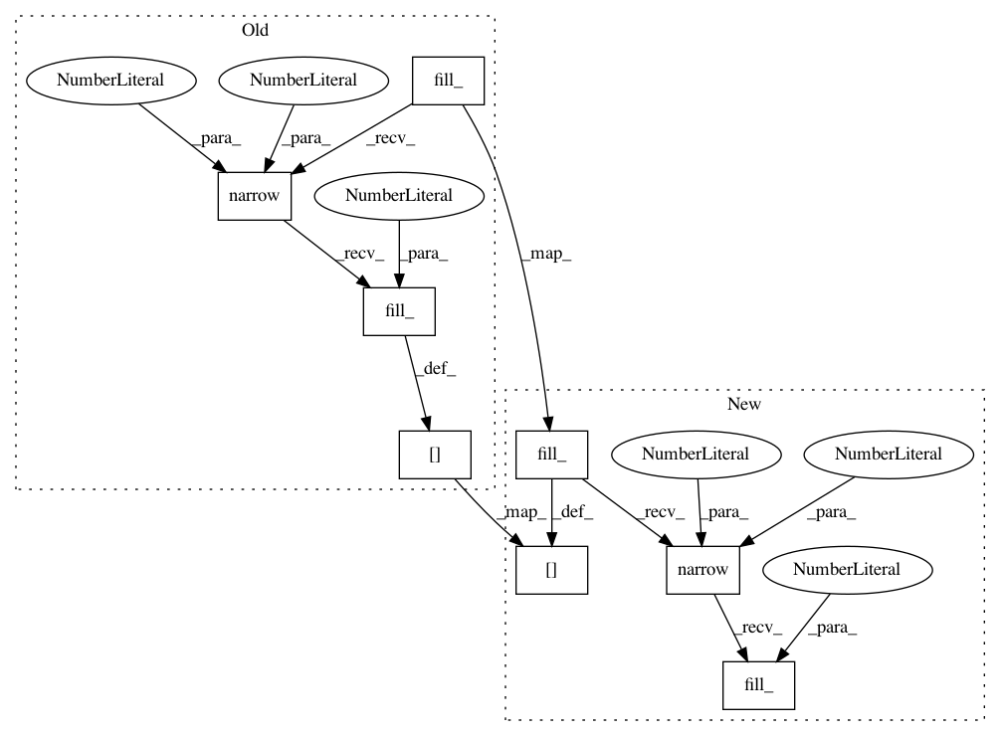

3c19c56bd64a12d83abc60e926885b14445c5cef,modules.py,Artifact,add_one_hot_proposal_type,#Artifact#Any#,190
Before Change
i = len(self.one_hot_proposal_type)
if i >= self.one_hot_proposal_type_dim:
log_error("one_hot_proposal_type overflow: {0}".format(i))
t = util.Tensor(self.one_hot_proposal_type_dim).fill_(0).narrow(0, i, 1).fill_(1)
self.one_hot_proposal_type[proposal_type] = t
def loss(self, sub_batch):
sub_batch_size = len(sub_batch)
After Change
i = len(self.one_hot_proposal_type)
if i >= self.one_hot_proposal_type_dim:
log_error("one_hot_proposal_type overflow: {0}".format(i))
t = util.Tensor(self.one_hot_proposal_type_dim).fill_(0)
t.narrow(0, i, 1).fill_(1)
self.one_hot_proposal_type[proposal_type] = t
def loss(self, sub_batch):
sub_batch_size = len(sub_batch)
In pattern: SUPERPATTERN
Frequency: 3
Non-data size: 8
Instances
Project Name: pyprob/pyprob
Commit Name: 3c19c56bd64a12d83abc60e926885b14445c5cef
Time: 2017-04-04
Author: atilimgunes.baydin@gmail.com
File Name: modules.py
Class Name: Artifact
Method Name: add_one_hot_proposal_type
Project Name: pyprob/pyprob
Commit Name: 3c19c56bd64a12d83abc60e926885b14445c5cef
Time: 2017-04-04
Author: atilimgunes.baydin@gmail.com
File Name: modules.py
Class Name: Artifact
Method Name: add_one_hot_instance
Project Name: pyprob/pyprob
Commit Name: 3c19c56bd64a12d83abc60e926885b14445c5cef
Time: 2017-04-04
Author: atilimgunes.baydin@gmail.com
File Name: modules.py
Class Name: Artifact
Method Name: add_one_hot_address